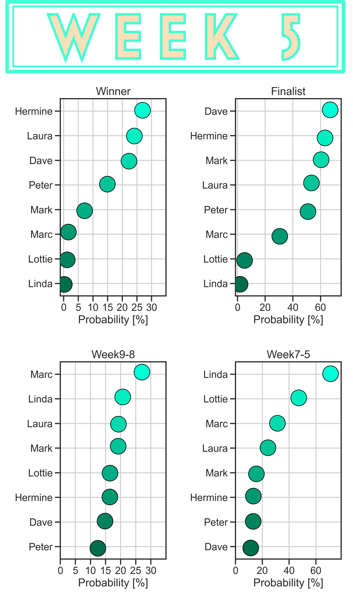

DeepBake Season 11
Predictions for season 11 updated weekly.
Most recent predictions
Details about predictions
A little bit on the predictions
For each baker, DeepBake calculates probabilities for the following brackets.
The sum of the brackets is 100% for an individual baker.Predictions for who will leave the tent are made with respect to remaining bakers. The baker predicted to leave will have the highest probability with respect to the week of competition. For example, week 6 DeepBake gives Bob 75% and Jill 64% in bracket 4. (Week 7-5). Since Bob was eliminated on week 5, Jill is the baker that DeepBake predicts to leave, she has the maximum probability for that bracket of the remaining bakers.
DeepBake uses data collected from the technical challenges and from the judges when they discuss who has done well and who has done poorly. So when the Star-Baker is announced, we pause the telly and input the new data to make a prediction on who might leave the tent. This is how predictions are made for each week. For more details, check out the GitHub repository.
In my experience, DeepBake seems to get better at predicting who will win the competition after week 4. Check out previous predictions for season 10. Note that for bracket 1. the GBBO Winner, they will also qualify for bracket 2., GBBO Finalist.
Without further ado, scroll down for season 11 predictions.
Week 8
Desserts
Desserts in England mean dick, the spotted kind. Yes a 300 year old steamed pudding recipe was the bane for the bakers this week. This week Laura and Hermine performed much better than their counterparts, producing stunning Show Stoppers. For that, Hermine was awarded Star Baker this week.
Marc and the wean (Peter) struggled this week, making awkward bakes in the Show Stopper. Peter's confidence during the technical melted away as placed second to last. DeepBake predicted Marc would be the baker to leave the tent at the Quarter Final with a 59% chance. Peter was close by with a 58% chance, but in the end DeepBake prevailed.
So what does DeepBake have to say about potential winners? Well, DeepBake really favors Dave giving him a 26% chance of winning GBBO and a 76% chance of being a finalist. Hermine is next in line for predicting the winner with a 19% chance.
Could this be a repeat of Season 10? Where a consistent, safe baker maintains his position and rises up to meet the challenges of the semi-final and final? Or will the star (Hermine) secure her place as winner. What's certain is Peter the Wean is on the chopping block next, so he has to beat Laura next week to be a finalist.
Week 7
1980s
Interesting theme for this week's baking considering that half the bakers were zygotes in the 1980s. Also I don't know what consists of a 1980s bake, perhaps it's because I'm young.
Going in this week, Hermine was near the bottom but she rescued herself placing 1st in the technical (donuts hmmm) and making a stunning Show Stopper. In fact, Hermine scored her first Star Baker this week.
Laura and Lottie really struggled though. Both did horribly in the technical, but not as bad as Dave who burnt the donuts.
After inputting the new data for Week 7, DeepBake had Laura poised to leave the tent. C'mon DeepBake, anyone could see it was Lottie's time to go. Who the hell makes an ice cream cake with the ice cream on the outside? Sometimes I wonder if the bakers perform poorly to leave the tent. Maybe more so this season considering they are quarantining on-site.
Although, Laura was predicted to leave with a 43% chance, Lottie was next in line with a 12% chance. So did DeepBake get it right this week, no. But it has been consistently giving Lottie higher scores for the 5-7th week elimination.
Going into the quarter final, we still have Dave leading the pack but Peter and Hermine are catching up. Dave has a 20% chance of winning GBBO with Peter and Hermine trailing at 16.5% and 16%. As for elimination next week, DeepBake does not seem to be certain. Dave has the highest probability leaving during Weeks 8-9 at 25%, but this might be due to his poor performance this week. Marc is next in line 24.8% followed by Laura with 24%.
Week 6
Japanese
The theme of the 100th episode of GBBO is Japanese, which is novel. The word for bread in Japanese is cognate with the word for bread in Portuguese (pan), since they were the first to introduce Western bread to Japan.
This week DeepBake saw that Mark L. did not perform well, which is in contrast to his ranking in week 5. Mark L's sub-par performance left him with the greatest odds to leave the tent at 45%. Hermine was tailing Mark in poor performance this week with a 31% chance of leaving the tent.
But lads, DeepBake did it. Mark L. left the tent even though is avocado family was very creative.
DeepBake is really digging Dave with a 47% chance of winning GBBO and 72% chance of baking in the final. Next in line is Peter the wean with a 16% chance of winning GBBO and 59% chance of baking in the final.
Next on the chopping block is Hermine but who knows, at this point the performance of a baker for the current episode seems enough to eliminate them. Perhaps the judges do not consider past baking performance until the last weeks of baking. Mark L's performance on Week 5 had him pegged to compete in the final, but he failed to make the mark for week 6.
Week 5
Pastry
This week many bakers have done well, Laura deemed herself queen of Pastry Week with consistently good bakes. Sadly, Linda has struggled this week placing last in the technical. Well what else can you say, the data don't lie. DeepBake predicted Linda would leave the tent, since she had the highest probability of remaining bakers to be eliminated during Weeks 5 through 7. Another win for DeepBake, but sad for the quirky baker who made an Amsterdam High Tea themed bake.
As for the winners, DeepBake is putting a lot of weight on Hermine to take the crown, even giving her more than 60% chance of being a Finalist. Dave is also favored to compete in the Final along with Mark L.
As for who might leave next week, Lottie and Marc E. are in danger of saying sayonara next week's Japanese challenge.